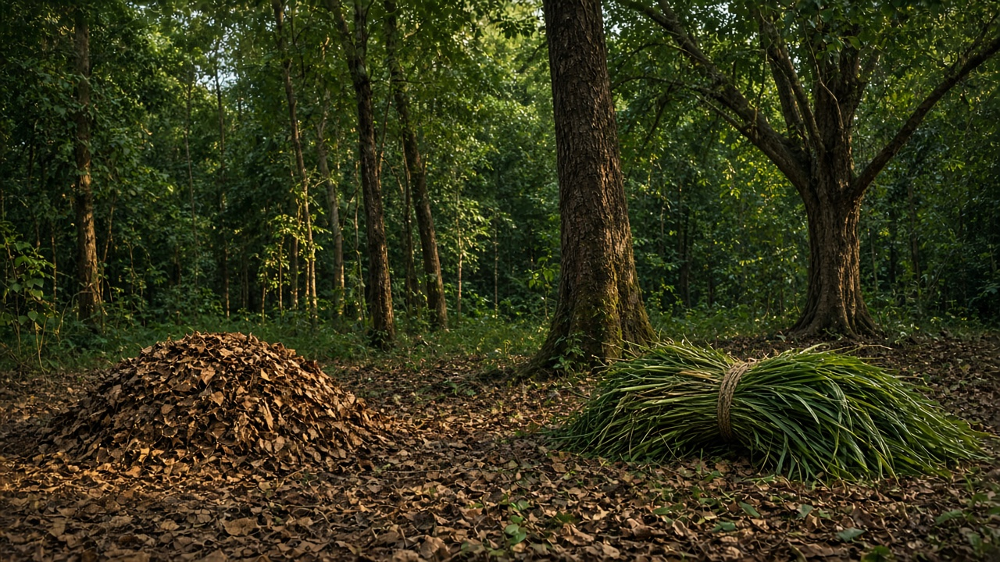
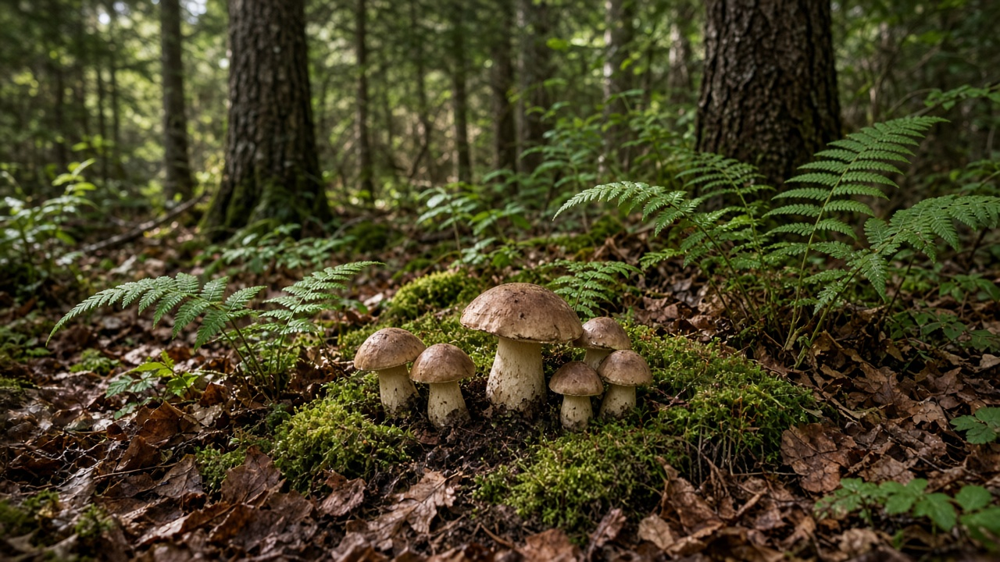
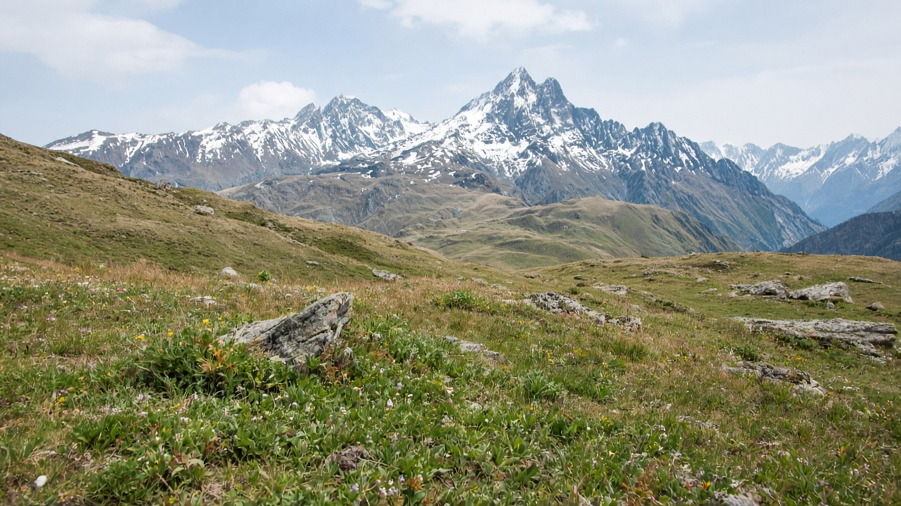

Non-Timber Forest Products and Livelihoods
Published on August 20, 2026

Non-timber forest products (NTFPs) are goods taken from the forest besides industrial roundwood: fuelwood, fodder, leaf litter, resins, gums, fibers, mushrooms, honey, wild foods, medicinal plants, and bamboo or rattan. For many rural households they are daily subsistence and seasonal cash, not a niche hobby. Harvest that respects regeneration—leaving mother plants, rotating patches, and avoiding destructive peeling or uprooting—can keep a forest economically useful without converting it to farmland. Unregulated commercial booms, by contrast, strip a species in a few seasons and then collapse both income and the stand. Valuing NTFPs in management plans makes the case for keeping mixed forests rather than replacing them with a single timber crop that yields cash only at the end of a long rotation.
Livelihoods from NTFPs are shaped by tenure, markets, and labor. Women and poorer households often collect fodder, litter, and medicinal herbs yet may receive less of the cash from high-value resins or timber permits. Middlemen, quality grading, and long transport chains capture margins unless user groups bulk, dry, and certify products. Cultivation of high-demand species in agroforestry buffers wild populations, but only if wild harvest rules remain and genetic mixing is managed. Inventory of NTFP density, not only tree volume, belongs in operational plans so quotas match biology. Seasonal calendars that close harvest during flowering or before seed set are simple tools that communities already use when they have the right to enforce them.
Policy that supports NTFP livelihoods funds processing, storage, and fair contracts as much as it funds planting. In Nepal, community forests supply leaf litter, grass, firewood, and a wide range of medicinal and aromatic plants from the tarai to high pastures; yarsagumba and other alpine products show both the income potential and the risk of overcrowding fragile sites. User-group rules on who may collect, how much, and where funds are spent determine whether NTFPs reduce pressure on timber or become another race to the last plant. Education should treat fodder, resin, and mushrooms as forest management, not as leftovers after logging. Keeping people who depend on these products inside decision-making is how mixed forests stay standing while still feeding kitchens and local markets.

गैर-काष्ठ वन पैदावार औद्योगिक गोल काठबाहेक वनबाट लिइने वस्तु हुन्: दाउरा, घाँस, पात कूडा, रेसिन, गम, रेसा, च्याउ, मह, जंगली खाना, औषधीय बोट र बाँस वा बेत। धेरै ग्रामीण घरधुरीका लागि तिनीहरू दैनिक निर्वाह र मौसमी नगद हुन्, केवल शौक होइनन्। पुनरुत्पादन सम्मान गर्ने संकलन—माउ बोट छोड्ने, प्याच चक्र गर्ने, र विनाशकारी बोक्रा तान्ने वा जरैसहित उखेल्ने छल्ने—वनलाई खेतमा नबदली आर्थिक रूपमा उपयोगी राख्न सक्छ। अनियन्त्रित व्यापारिक उछालले उल्टो केही याममा प्रजाति तान्छ अनि आय र स्ट्यान्ड दुवै ढलाउँछ। व्यवस्थापन योजनामा गैर-काष्ठ पैदावार मूल्याङ्कन गर्दा मिश्रित वन राख्ने तर्क बन्छ, लामो चक्रको अन्त्यमा मात्र नगद दिने एउटै काठ बालीले बदल्ने होइन।
गैर-काष्ठ पैदावारबाट जीविकोपार्जन स्वामित्व, बजार र श्रमले आकार पाउँछ। महिला र गरिब घरधुरी प्रायः घाँस, कूडा र औषधीय जडीबुटी संकलन गर्छन् तर उच्च मूल्य रेसिन वा काठ अनुमतिबाट कम नगद पाउन सक्छन्। बिचौलिया, गुणस्तर ग्रेडिङ र लामो यातायात शृङ्खलाले मार्जिन समात्छन् जबसम्म उपभोक्ता समूहले थोक, सुकाइ र प्रमाणीकरण गर्दैनन्। कृषि वनमा उच्च माग प्रजाति खेतीले जंगली जनसंख्या बफर गर्छ, तर जंगली संकलन नियम रहँदा र आनुवंशिक मिश्रण व्यवस्थापन हुँदा मात्र। रूख आयतन मात्र होइन गैर-काष्ठ घनत्वको सूची सञ्चालन योजनामा पर्छ ताकि कोटा जीवविज्ञानसँग मिलोस्। फूल फुल्दा वा बीउ लाग्नुअघि संकलन बन्द गर्ने मौसमी पात्रो सरल औजार हुन् जुन अधिकार हुँदा समुदायले पहिले नै प्रयोग गर्छन्।
गैर-काष्ठ जीविकोपार्जन समर्थन गर्ने नीति रोपणजत्तिकै प्रशोधन, भण्डारण र निष्पक्ष सम्झौता कोष गर्छ। नेपालमा सामुदायिक वनले तराईदेखि उच्च खर्कसम्म पात कूडा, घाँस, दाउरा र औषधीय तथा सुगन्धित बोटको व्यापक दायरा दिन्छन्; यार्सागुम्बा र अन्य अल्पाइन पैदावारले आय सम्भावना र कमजोर स्थल भीडभाडको जोखिम दुवै देखाउँछन्। कसले संकलन गर्न पाउँछ, कति, र कोष कहाँ खर्च हुन्छ भन्ने उपभोक्ता समूह नियमले गैर-काष्ठ पैदावारले काठमा दबाब घटाउँछ वा अन्तिम बोटसम्मको अर्को दौड बन्छ भन्ने तय गर्छ। शिक्षाले घाँस, रेसिन र च्याउलाई कटानपछिका बाँकी होइन वन व्यवस्थापन मान्नुपर्छ। यी पैदावारमा निर्भर मानिसलाई निर्णयभित्र राख्नु मिश्रित वन उभ्याएर पनि भान्सा र स्थानीय बजार खुवाउने तरिका हो।

गैर-काष्ठ वन उत्पाद औद्योगिक गोल काष्ठ के अलावा वन से लिए जाने वाले माल हैं: ईंधन काष्ठ, चारा, पत्ती कूड़ा, रेजिन, गोंद, रेशे, मशरूम, शहद, जंगली खाद्य, औषधीय पौधे और बाँस या बेंत। कई ग्रामीण घरों के लिए वे दैनिक निर्वाह और मौसमी नकद हैं, केवल शौक नहीं। पुनरुत्पादन का सम्मान करने वाला संग्रह—मातृ पौधे छोड़ना, पैच चक्र करना, और विनाशकारी छाल खींचना या जड़ सहित उखाड़ना टालना—वन को खेत में बदले बिना आर्थिक रूप से उपयोगी रख सकता है। अनियंत्रित व्यापारिक उछाल उलटा कुछ मौसमों में प्रजाति खींचता है फिर आय और स्टैंड दोनों ढहाता है। प्रबंधन योजनाओं में गैर-काष्ठ उत्पाद मूल्यांकित करने से मिश्रित वन रखने का तर्क बनता है, लंबे चक्र के अंत में ही नकद देने वाली एक काष्ठ फसल से बदलने का नहीं।
गैर-काष्ठ उत्पादों से आजीविका स्वामित्व, बाज़ार और श्रम से आकार पाती है। महिलाएँ और गरीब घर अक्सर चारा, कूड़ा और औषधीय जड़ी संग्रहित करते हैं पर उच्च मूल्य रेजिन या काष्ठ अनुमतियों से कम नकद पा सकते हैं। बिचौलिए, गुणवत्ता ग्रेडिंग और लंबी परिवहन शृंखला मार्जिन पकड़ते हैं जब तक उपभोक्ता समूह थोक, सुखाना और प्रमाणीकरण न करें। कृषि वन में उच्च माँग प्रजाति खेती जंगली आबादी बफर करती है, पर जंगली संग्रह नियम रहें और आनुवंशिक मिश्रण प्रबंधित हो तब। केवल वृक्ष आयतन नहीं गैर-काष्ठ घनत्व की सूची संचालन योजना में आती है ताकि कोटा जीवविज्ञान से मिले। फूल आने या बीज लगने से पहले संग्रह बंद करने वाले मौसमी कैलेंडर सरल उपकरण हैं जिन्हें अधिकार होने पर समुदाय पहले से प्रयोग करते हैं।
गैर-काष्ठ आजीविका समर्थित करने वाली नीति रोपण जितना प्रसंस्करण, भंडारण और निष्पक्ष अनुबंध कोष करती है। नेपाल में सामुदायिक वन तराई से उच्च चरागाह तक पत्ती कूड़ा, घास, ईंधन काष्ठ और औषधीय तथा सुगंधित पौधों की व्यापक श्रेणी देते हैं; यार्सागुम्बा और अन्य अल्पाइन उत्पाद आय संभावना और कमज़ोर स्थलों पर भीड़ दोनों दिखाते हैं। कौन संग्रह कर सकता है, कितना, और कोष कहाँ खर्च होता है वाले उपभोक्ता समूह नियम तय करते हैं कि गैर-काष्ठ उत्पाद काष्ठ पर दबाव घटाएँ या अंतिम पौधे तक की दूसरी दौड़ बनें। शिक्षा चारा, रेजिन और मशरूम को कटाई के बाद बचे नहीं वन प्रबंधन माने। इन उत्पादों पर निर्भर लोगों को निर्णयों के अंदर रखना मिश्रित वन खड़े रखकर भी रसोई और स्थानीय बाज़ार खिलाने का तरीका है।